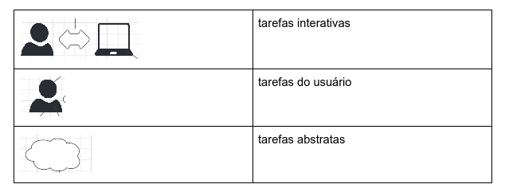
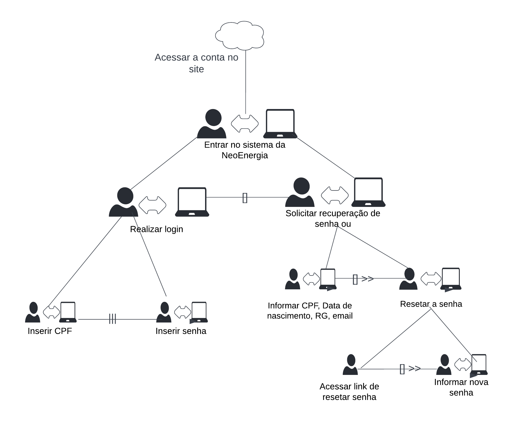
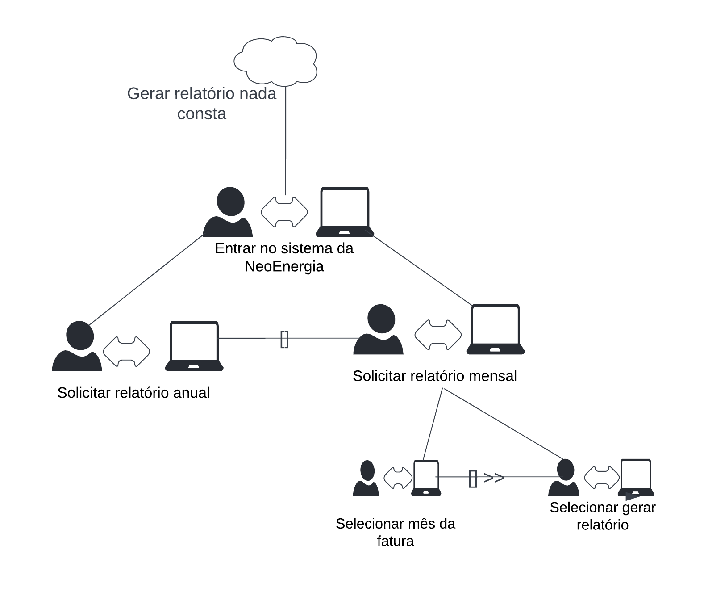

Árvores de Tarefas Concorrentes
Introdução
Dentro do processo de análise de tarefas, um dos métodos utilizados é o de Análise de Tarefas Concorrentes (CTT), em que, separa-se as tarefas entre: usuários, sistema, interativas e abstratas.
Com a elaboração do CTT, é possível identificar tanto a hierarquia entre as atividades quanto as relações entre elas.
As tarefas se subdividem em 4 tipos:
- tarefas do usuário, que são feitas a parte do sistema
- tarefas do sistema, em que o usuário não participa da ação
- tarefas interativas, em que tanto o usuáio como o sistema fazem diálogo para sua realização
- tarefas abstratas, que representam um conjunto de tarefas
|  |
|---|
| Figura 1: Legenda das tarefas inseridas no CTT |
Diagrama de Análise de Tarefas Concorrentes
Dentro do site da NeoEnergia, foram escolhidas algumas tarefas para serem analisadas como mostra as Figuras 2 e 3.
|  |
|---|
| Figura 2: Árvore de tarefas concorrentes referente ao acesso da conta no site |
|  |
|---|
| Figura 3: Árvore de tarefas concorrentes referente à geração do relatório de nada consta |
Bibliografia
Barbosa, S. D. J.; Silva, B. S. da; Silveira, M. S.; Gasparini, I.; Darin, T.; Barbosa, G. D. J. (2021);Interação Humano-Computador e Experiência do usuário.
Tabela de Versionamento
| Data | Versão | Descrição | Autor | Revisor |
|---|---|---|---|---|
| 16/07/2022 | 0.1 |
Criação da página de tarefas concorrentes | Luíza Esteves | Matheus Perillo |